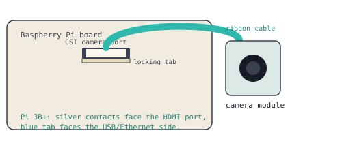

This one's optional, for anyone who finishes the sensor project with time to spare. The ribbon cable is the most fragile connector you'll handle all week, so have your teacher glance at your connection before you power on.
Every component so far has plugged into GPIO pins. The camera doesn't. It connects through a dedicated slot called the CSI port, using a flat ribbon cable instead of individual wires.

1 Find the CSI port, it sits between the HDMI port and the audio jack. Gently pull up the black locking tab.
2 Slide the ribbon cable in with the silver contacts facing the HDMI port, and the blue tab facing the USB/Ethernet side.
3 Push the locking tab back down to hold the cable in place. It should feel snug, not loose.
Before writing any code, confirm the camera actually works.
libcamera-hello
from picamera2 import Picamera2
camera = Picamera2()
camera.start()
camera.capture_file("photo.jpg")
camera.stop()
Check your files with ls, you should see photo.jpg sitting there.
import tkinter as tk
from picamera2 import Picamera2
from datetime import datetime
camera = Picamera2()
camera.start()
window = tk.Tk()
status = tk.Label(window, text="Ready")
status.pack()
def take_photo():
filename = datetime.now().strftime("photo_%H%M%S.jpg")
camera.capture_file(filename)
status.config(text=f"Saved {filename}")
tk.Button(window, text="Take Photo", command=take_photo).pack()
window.mainloop()
Can you make the status label show the actual photo instead of just its filename? Look into a library called PIL and a Tkinter widget that can display images, not just text.